Urban Visualization II
Form, Design & Simulation (3D + Impact) - CS-GY 6313 - Fall 2026
2026-11-06
Welcome to the Third Dimension
Our Journey Through Geovisualization
Week 8: 2D Static Maps
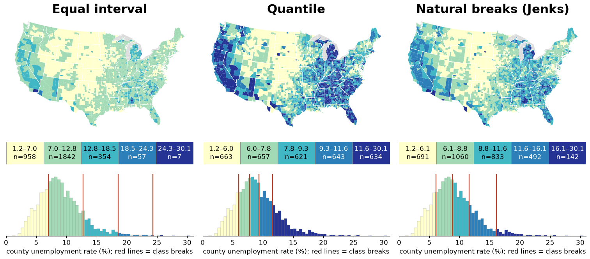
Projection, normalization, classing
Week 9: 2D + Time
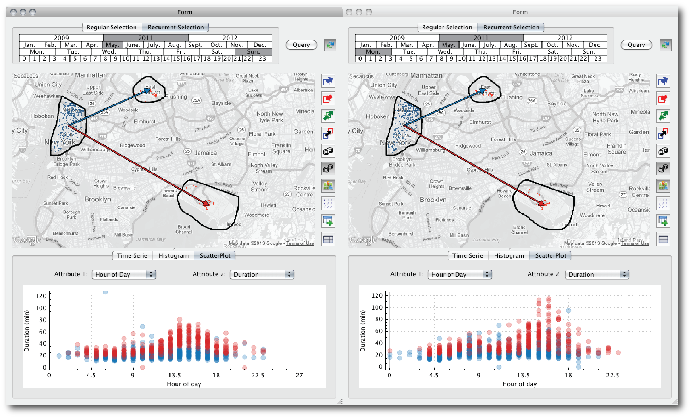
Urban flows, interactivity, linked views
Week 10: 3D + Simulation
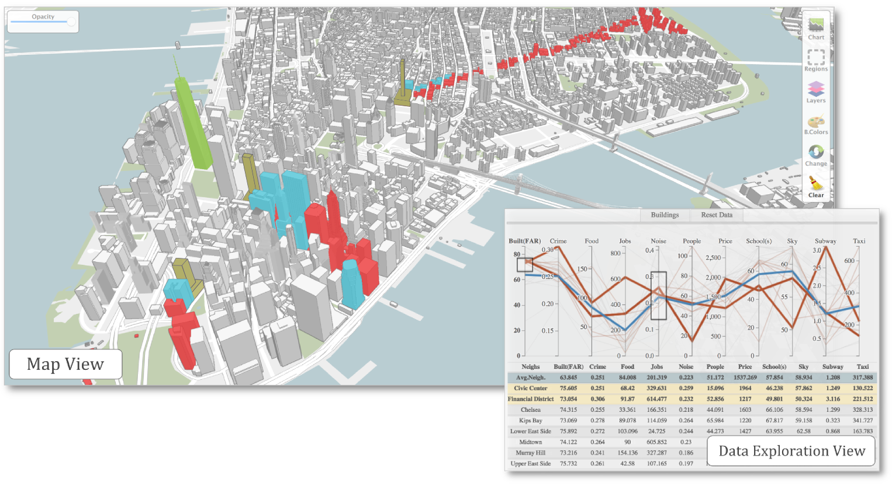
Built environment, form, impact analysis
Today’s Focus: The Built Environment
From flat maps to the three-dimensional form of the city
- Week 8: Geography as abstract areas and boundaries
- Week 9: Movement and flows across 2D space
- Week 10: Physical structures: buildings, streets, skylines
Today’s Goal:
Explore how 3D visualization supports urban planning, architectural design, and impact simulation.
Part 1: Why 3D? The Human Experience
Kevin Lynch’s “Image of the City” (1960)
The Fundamental Question:
How do people mentally map a city?
Lynch’s Answer:
Not through abstract 2D maps, but through five types of elements that we experience in 3D.
A city is legible when those elements are easy to identify and connect.
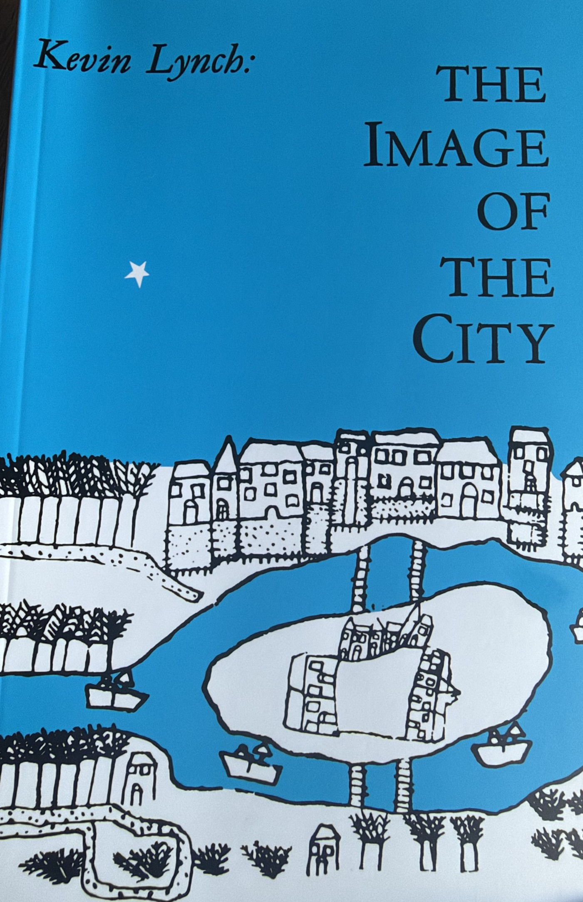
Lynch, K. (1960). The Image of the City. MIT Press.
Boston, Two Ways
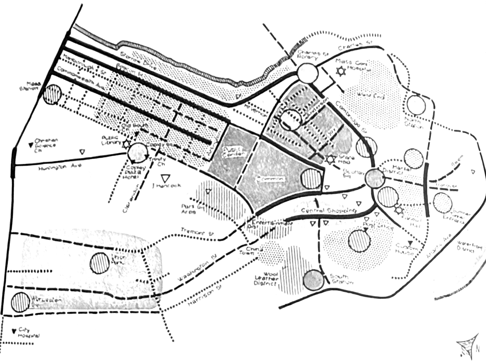
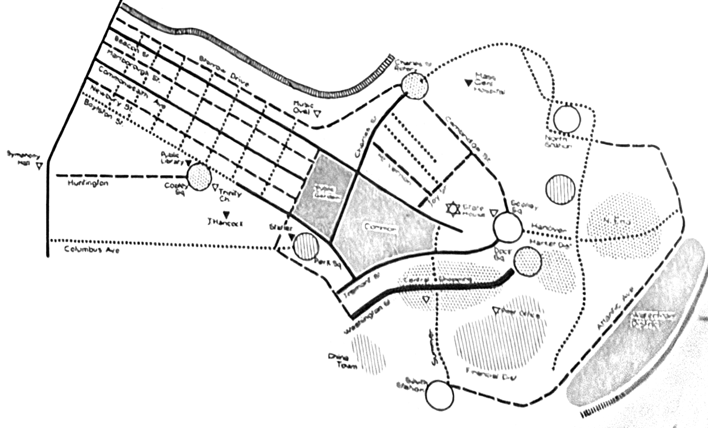
Same city, two methods: what residents said (left) and what they drew (right).
Lynch, K. (1960). The Image of the City. MIT Press. Figs. 35 and 36, p. 146.
Lynch’s Five Elements
1. Paths: channels of movement (dashed and solid lines)
2. Edges: linear breaks, such as the river and waterfront (hatched strips)
3. Districts: areas with common character (shaded and dotted areas)
4. Nodes: focal points and junctions (circles)
5. Landmarks: unique reference points (stars and triangles)
Most of these depend on height, mass or visibility, so they are fundamentally 3D concepts.
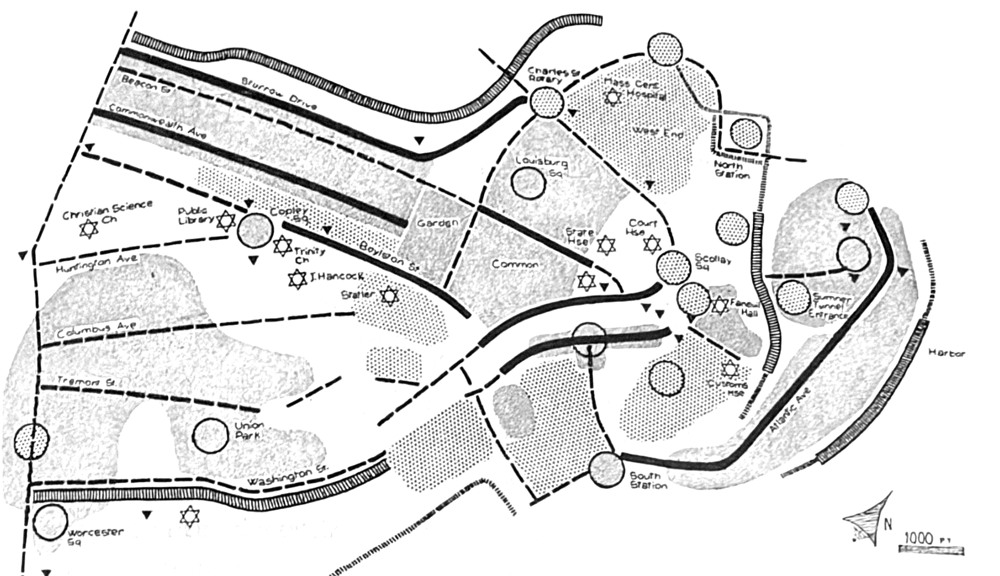
Lynch, K. (1960). The Image of the City. MIT Press. Fig. 3, p. 19: the visual form of Boston as seen in the field.
The Experiential Dimension
2D maps show:
- Location
- Proximity
- Area
- Connectivity (topology)
But they miss:
- Height and mass
- Shadows and light
- Visual prominence
- Sense of enclosure
3D visualization reveals:
- Building heights and skylines
- Shadow patterns throughout the day
- Sight lines and viewsheds
- Spatial enclosure and openness
These are essential for understanding how a city feels to inhabit.
Part 2: The Urban Planning Challenge
Rapid Global Urbanization
By 2050: about 68% of the world’s population will live in cities
The Challenge:
Making decisions about massive new developments:
- 80-story residential towers
- Transit mega-projects
- Urban renewal districts
The Question:
How do we know the impact of these developments on neighborhoods, residents, and the urban fabric?
Current Scenario: Limited Tools
- Decisions based on: experience, precedent, negotiation
- Analysis tools: off-the-shelf design software; limited, not interactive
- Visualization: a few static, pre-rendered images
- Data: exists (city open data) but is not integrated into the design process
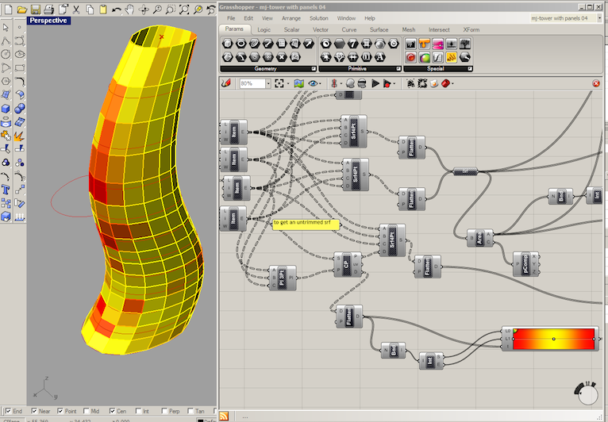
The Gap: What’s Missing
What planners and architects need:
- Integrated data access: building characteristics, environmental metrics, social and economic data
- Interactive exploration: query and filter dynamically, with linked views
And what they need to do with it:
- Impact simulation: “what-if” scenarios with real-time feedback
- Decision support: compare options and trade-offs, across several scales
Part 3: Case Study - Urbane
Urbane: A 3D Framework for Urban Planning
A 3D framework to support data-driven decision making in urban development
Ferreira, N., Lage, M., Doraiswamy, H., Vo, H., Wilson, L., Werner, H., Park, M., & Silva, C. (2015). Urbane: A 3D Framework to Support Data Driven Decision Making in Urban Development. IEEE VAST 2015.
Urbane: Three Components
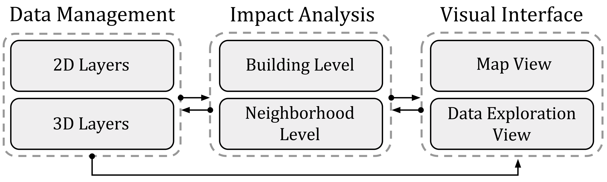
The data management, impact analysis, and visual interface components of Urbane
Ferreira et al. (2015). Urbane, Fig. 2.
Data Layers: 2D and 3D Together
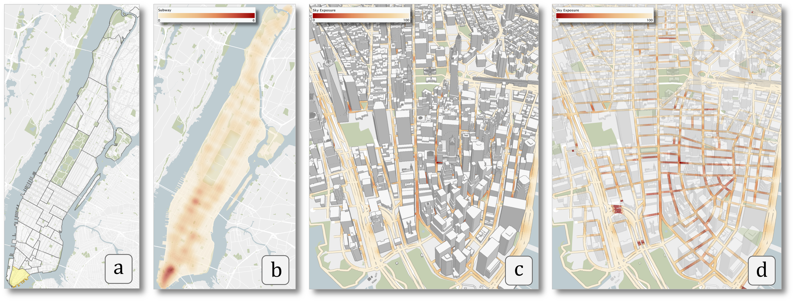
Polygon, grid, combined 2D+3D and road-network heat map layers over Manhattan
Ferreira et al. (2015). Urbane, Fig. 4.
The Power of Linked Views in 3D
Brushing and linking works in 3D, too!
3D → 2D
Select buildings or a neighborhood in the map
↓
See their attributes in the data exploration view
Use case: “What are the characteristics of this neighborhood?”
2D → 3D
Brush ranges on the parallel coordinates axes
↓
See matching buildings highlighted in the 3D map
Use case: “Show me buildings near a park with good subway access”
Part 4: Linking 3D and 2D in Practice
Query in Data Space, See the Result in the City
Each filter on the parallel coordinates plot updates which buildings are highlighted in the map.
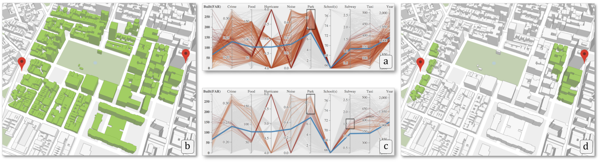
Brushing a parallel coordinates plot (a, c) and the resulting buildings in the map (b, d)
Ferreira et al. (2015). Urbane, Fig. 5.
Use Case: Finding Development Sites in the Financial District
Compare the neighborhood to the rest of Manhattan, then filter down to candidate sites.
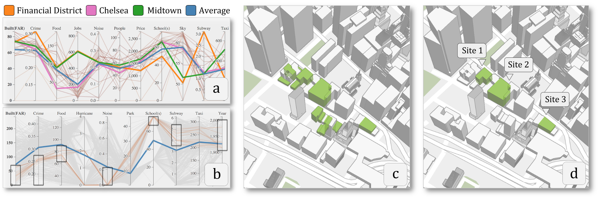
Parallel coordinates comparing neighborhoods (a), a filter on site properties (b), and the resulting candidate sites in 3D (c, d)
Ferreira et al. (2015). Urbane, Fig. 6.
Part 5: Interactive Impact Analysis
From Visualization to Simulation
The most powerful feature: “What-if” analysis
- Not just viewing data
- But simulating the impact of proposed changes
- Interactively, in real time
The Question:
“How will a new building change its surroundings?”
Two Impact Measures: Landmark Visibility and Sky Exposure
- Landmark visibility: can a building still see a landmark, such as the Statue of Liberty or the Freedom Tower?
- Sky exposure: what fraction of the sky is visible from a point on the street?
- Impact = the difference between the “before” and “after” values
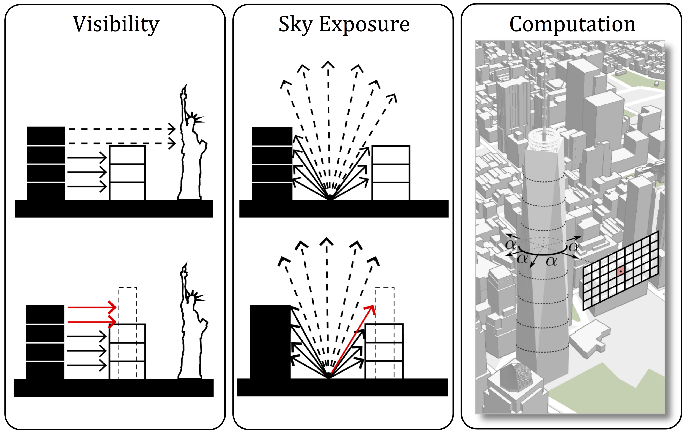
Ferreira et al. (2015). Urbane, Fig. 3.
Computing Impact in Real Time
Rasterization, not ray tracing
- Render the scene from a viewpoint into a 256 × 256 image
- Give every building a unique color
- Count pixels: how many show each building, how many show sky
- Impact = change in the counts when the geometry is replaced
Why it is fast
- The GPU does the rendering; a compute shader does the counting
- Sky exposure at 650 locations: 8.4 s on a CPU, 75 ms on a GPU (about two orders of magnitude)
- Sky exposure computed every 10 m along every street
Urbane: Testing a Proposed Building
- The olive building is the proposed construction; green is the landmark (Freedom Tower)
- Landmark visibility: buildings in red lose view, blue gain view
- Street segments show the change in sky exposure
- The architect can swap the design and see both update
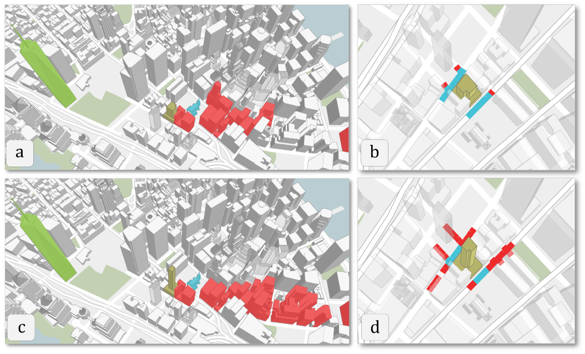
Ferreira et al. (2015). Urbane, Fig. 7.
The Value of Interactive Simulation
Traditional approach:
- Developer provides a few static renderings
- Planner reviews documents
- Public hearing with limited visuals
- Decision with incomplete information
Iterations: one or two
With Urbane:
- Load the proposed design into the 3D model
- Compute the impact instantly
- Adjust parameters, such as the floor plate
- Compare options, then iterate
Iterations: as many as time allows
More informed decisions, and stakeholders who can see the trade-offs.
Part 6: Performance-Driven Design
Taking It Further: Explore Thousands of Designs
Why test one design? Explore the whole space of designs.
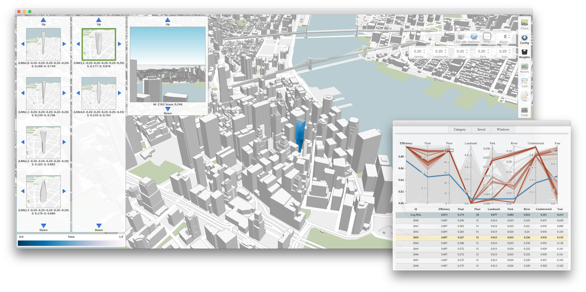
Doraiswamy, H., Wilson, L., Werner, H., Park, M., & Silva, C. (2015). Topology-based Catalogue Exploration Framework for Identifying View-Enhanced Tower Designs. ACM SIGGRAPH Asia (ACM TOG 34(6)).
Why Towers, and Why Views?
Why towers?
- Developable sites are getting smaller
- Maximize the use of the allowable building area
- The norm in dense cities
Why views?
- Views are one of the first things people notice
- Views are limited in dense regions
- A good view adds value
The design problem:
Find tower designs that maximize view quality while staying practical:
- Zoning limits (FAR, maximum height)
- Minimum building efficiency
- Overlap between floor profiles
A Design Space of Tower Shapes
A tower is generated from floor profiles and a few operations; the parameters define a design space.
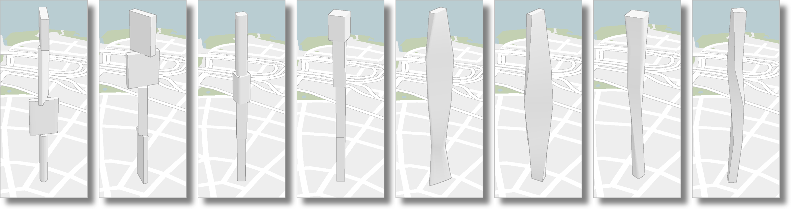
Families of tower designs generated by varying parameters
Quantifying View Quality
- The view along a window (a point and a direction) is a weighted average of several view metrics
- The weights are the user’s handle: “good view” is subjective
- A building view score is the average over its windows
- One tower has about 10,000 windows
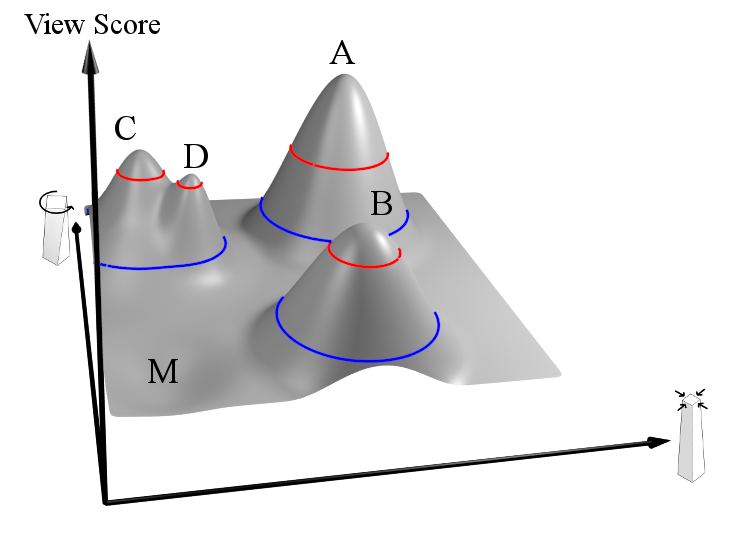
Part 7: Precomputation & Exploration
The View Index: A 4D Texture
Precompute once
For each location (x, y, z) and viewing direction θ, store what is visible
- Grid every 10 ft in the plane, every 12 ft in height
- One direction every 6° (60 directions)
- Millions of precomputed views per site
Then look up
A view for any window is a constant-time lookup
- 33.3K view computations per second on a single CPU
- Over two orders of magnitude faster than exact computation
- Approximate scores track the exact ones closely
Which Designs Are Interesting? Use Topology
- Sample the parameter space; each point is a tower with a view score
- Connect nearby samples (nearest-neighbor graph)
- Find the high-persistence maxima of the score function
- Each peak is a distinct, good design family: a catalogue
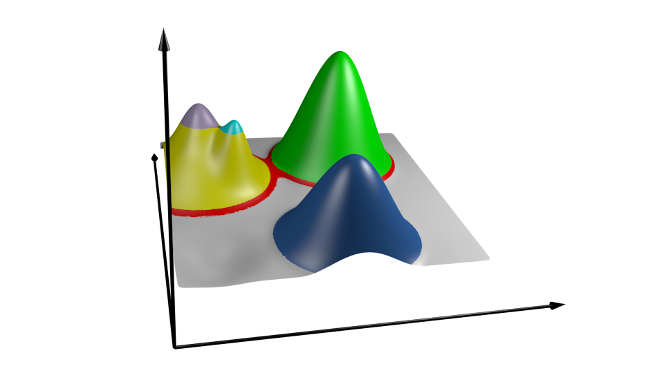
Exploring the Catalogue
A parallel coordinates view over design and view metrics lets the architect filter to the designs that matter.
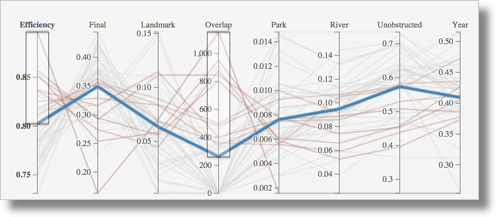
Parallel coordinates for filtering the design catalogue
From Catalogue to a Building
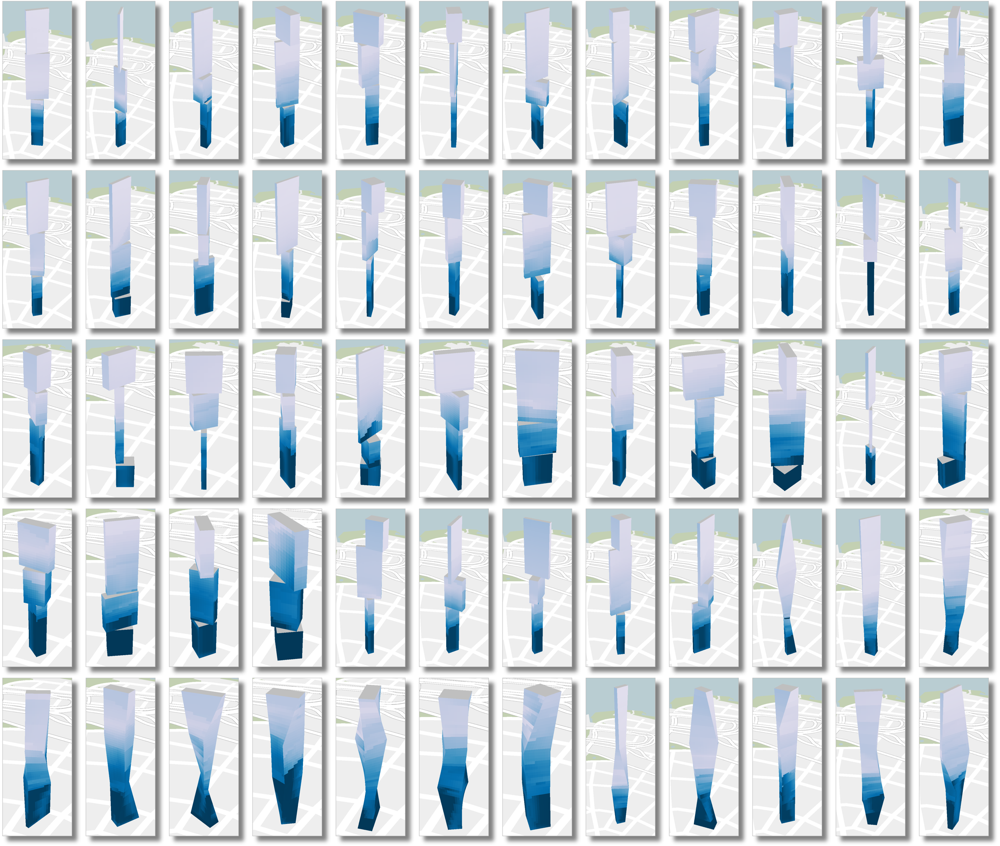
Refining a Design and Assigning Programs
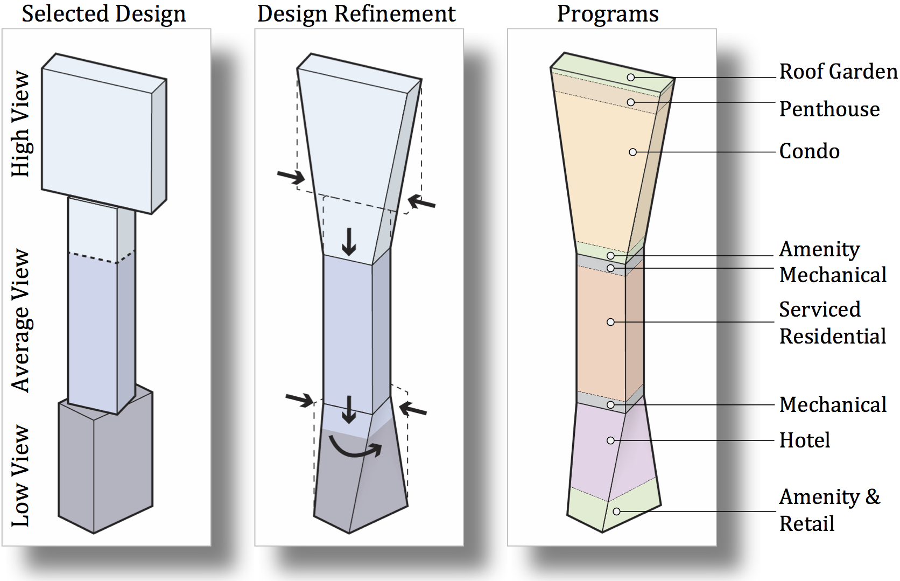
Selected design, refined profile, and program allocation by view quality
Performance-Driven Design: The Paradigm Shift
Traditional design:
- Architect sketches two or three options
- Each is evaluated by hand
- The client picks one
- Refinement begins
Exploration: minimal
Performance-driven design:
- Define objectives and constraints
- Generate a large design space
- Evaluate it automatically
- Explore trade-offs visually
- Select and refine
Exploration: comprehensive
Visualization turns an enormous search into something a person can steer.
Part 8: Critical Reflection - When to Use 3D?
A Question from the Urbane Authors Themselves
“3D? Is it the right way to go?” Same city, two representations: which question is each one good for?
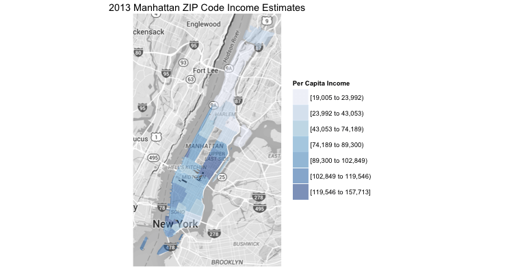
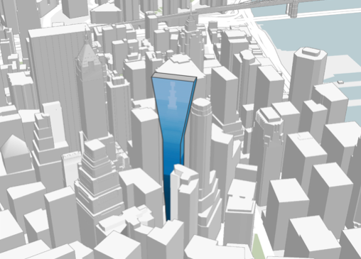
The Case FOR 3D
- Matches human experience
- We experience cities in 3D
- More intuitive for non-experts
- Essential for certain measures
- Sky exposure, viewsheds, sightlines
- Sense of enclosure
- Public communication
- Stakeholders can “see” the impact
- Supports participatory planning
- Reveals spatial relationships
- Height disparities
- Clustering patterns
- Neighborhood character
The Case AGAINST 3D
- Occlusion
- Buildings hide other buildings
- Information loss
- Navigation complexity
- Easy to get disoriented
- Cognitive overhead
- Can be chart junk
- Adds visual complexity
- Sometimes 2D is clearer
- Computational cost
- Rendering and interaction lag
- Needs capable hardware
Guidelines: When to Use 3D
Use 3D when:
- The question is inherently 3D: views, sky, shadows, height compared to neighbors
- You are analyzing 3D form: massing, skyline, enclosure
- You need to communicate with the public
Use 2D when:
- The question is statistical: highest density, crime patterns
- You need precise comparison: ranking, exact values
- You want to avoid occlusion
- The data is abstract or non-spatial: networks, temporal patterns
The Hybrid Approach: Link 3D and 2D
Urbane’s solution: 3D for context, 2D for precision
3D for:
- Spatial context
- Impact visualization
- Intuitive exploration
- Public communication
2D for:
- Precise filtering
- Multi-dimensional queries
- Statistical overview
- Quantitative comparison
Part 9: Synthesis
From Presentation to Exploration to Simulation
Week 8: Static presentation
- One fixed view
- The designer’s perspective
- “Here is the data”
Question: When is spatial encoding the right choice?
Week 9: Interactive exploration
- User-driven queries
- Linked views
- “Ask your own questions”
Question: How do we explore massive, dynamic flows?
Week 10: Interactive simulation
- Impact prediction
- Generative design
- “Create and test scenarios”
Question: When is the third dimension essential?
Your Toolkit: Three Lenses
When approaching any geographic visualization problem, ask:
The 2D lens (Week 8)
- Is the projection appropriate?
- Is the data normalized?
- Are the colors and classes honest?
The temporal lens (Week 9)
- How does the pattern change over time?
- What interactions enable exploration?
- Are spatial and temporal views linked?
The 3D lens (Week 10)
- Is the question inherently about form?
- Does 3D add value or complexity?
- Can I simulate impact interactively?
The Future of Urban Visualization
Emerging trends:
- Real-time urban sensing: live city dashboards
- AI-assisted design: generative models, automated optimization
- Virtual and augmented reality: on-site impact preview
- Participatory planning: public-facing tools
Ongoing challenges:
- Scalability: city-scale to planet-scale, in real time
- Accessibility: tools for non-experts, equity in representation
- Validation: are simulations accurate? uncertainty
- Ethics: whose data, whose benefit, privacy
Wrap-up
Today in Three Points
- 3D is warranted when the question is about form: views, sky, light, height
- Simulation turns visualization into decision support: “what-if” in real time
- Link 3D to 2D: context and impact in the city, precision in the abstract views
Next:
- Lab (today): 3D transformations, the math behind every view in a 3D map
- Mini-project 2 (temporal visualization) is due Nov 19
- Next week: visualizing time-oriented data
- Reading: the Urbane paper (link in the syllabus)
Questions?
Every visualization makes choices.
Make yours deliberately, defensibly, and ethically.